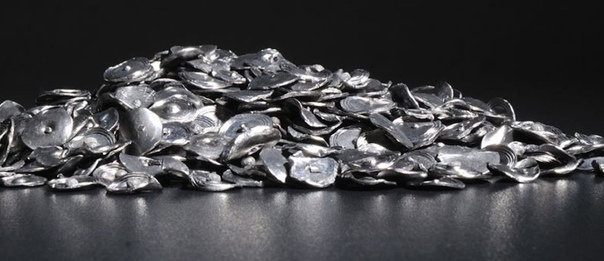

Тантал

Танта́л (химический символ — Ta, от лат. Tantalum) — химический элемент 5-й группы (по устаревшей классификации — побочной подгруппы пятой группы, VB) шестого периода периодической системы химических элементов Д. И. Менделеева, с атомным номером 73.При стандартных условиях тантал — это блестящий переходный металл.
Открыт в 1802 г. шведским химиком А. Экебергом и из-за трудностей выделения в чистом виде назван по имени героя древнегреческой мифологии Тантала; в виде металла получен в 1903 г. немецким химиком В. Болтоном.
Содержание тантала в земной коре 2,5·10–4% по массе. Вместе с Nb входит в состав минералов колумбита-танталита, пирохлора, микролита и др., вместе со Sn – в состав касситерита.Тантал получают из рудных концентратов и шлаков оловянной плавки фторидным, сульфатным или хлоридным методами. Для очистки и разделения используют жидкостную экстракцию, для получения металла – Na-термическое восстановление K2TaF7, для получения Ta2O5 – осаждение и прокаливание гидроксида. Мировое производство тантала в начале 2000-х гг. составляло до 1400 т/год, позднее значительно снизилось.Металлический тантал применяют в виде порошка (в электролитических конденсаторах), проволоки, тиглей и др. металлических изделий (в химической промышленности, ядерной энергетике, медицине и др.), как присадку к сплавам; пентаоксид тантала – как компонент стёкол, сырьё для получения танталата лития LiTaO3 (материал для акусто- и электрооптики, нелинейной оптики и др.); карбид тантала – как компонент твёрдых сплавов.